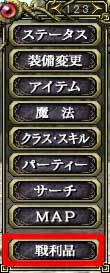
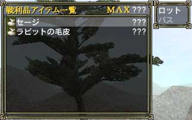

パーティーでゲームを進める場合、入手したアイテムは「戦利品」として全員が共有するアイテム袋(?)の中に収集されます。共有といってもアイテム袋の中身は自由に利用できるのではなく、「ロット」 をして自分のものにしない限り利用できません。
ロットをするにはメニュー1ページ目もしくは2ページ目の「戦利品」を選び、欲しいアイテムを選択して 「ロット」を選んでください。ロットの原理はよくわかりませんが、ロットが成立するとロットインしたアイテムが自分の手元に入ります。
ロットを頻繁に行うパーティーに参加した場合、いらないアイテムは「戦利品」のウィンドウで「パス」することも必要です。
なお、ロットの原理は1～100までの数が書かれているサイコロを、1人1回ずつ振り、一番大きい目が出た人にアイテムを渡すという形になっています。一人がロットを行った場合、他のメンバーが一定時間内にロットを行わない限り、始めにロットした人のものとなるので注意してください。またロットは一つのアイテムについて一度しかできません。
 
(左：メニュー 右：ロット画面) |
|